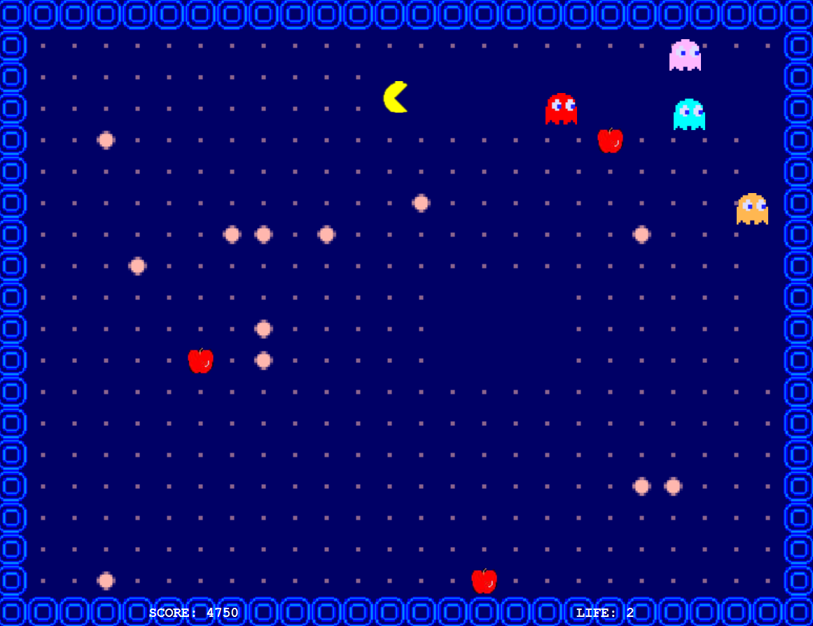

👻 Pacman - Jeu en Java

🎯 Objectif du projet
L'objectif de ce projet était de développer une version du jeu Pacman en Java, en reproduisant les mécanismes fondamentaux du jeu original : déplacements sur une grille, gestion des collisions, collecte de points et comportements des fantômes.
👤 Mon rôle dans le projet
Ce projet a été réalisé en groupe de quatre personnes. De mon côté, j'ai principalement travaillé sur la gestion des fantômes, en implémentant leur comportement, leurs déplacements dans le labyrinthe ainsi que leurs interactions avec Pacman.
🧠 Compétences développées
- Gestion des déplacements et des collisions
- Conception d'une architecture orientée objet
- Utilisation de patrons de conception
- Développement d'un jeu interactif en Java
- Travail collaboratif en équipe de 4 avec Git
🛠️ Compétences utilisées
Ce projet m'a permis d'approfondir mes connaissances en Java, notamment sur la gestion des interactions entre les entités du jeu et l'organisation du code à l'aide de patrons de conception.